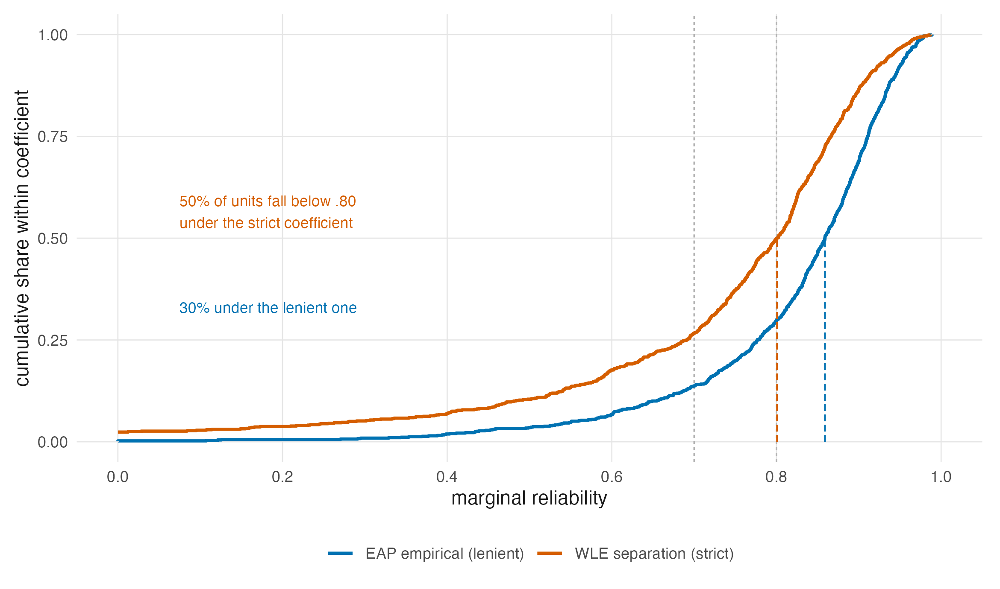
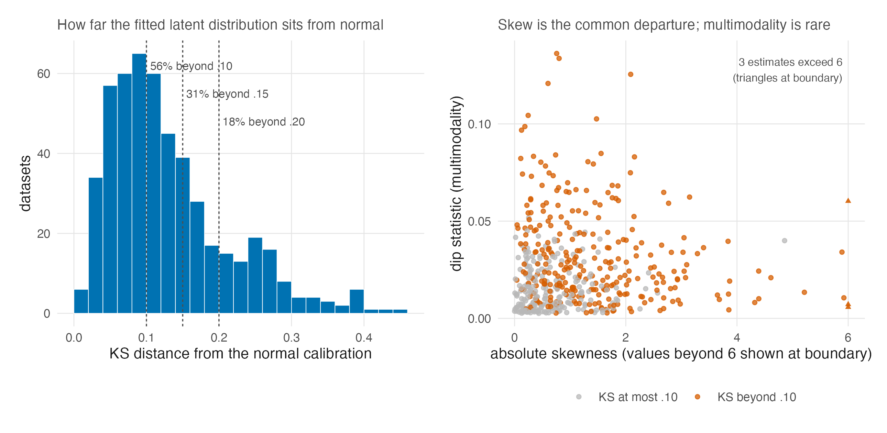
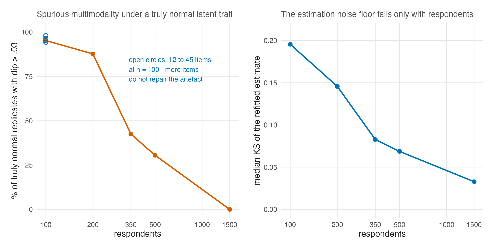

| Quantity | EAP empirical reliability | WLE separation reliability |
|---|---|---|
| Units | 889 | 879 |
| Median | 0.859 | 0.801 |
| Share below .80 | 30% | 50% |
| Share below .70 | 14% | 27% |
| Share below .50 | 3% | 10% |
| True (deconvolved) share below .80 | 30.3% | 51.8% |
28 What Real Tests Look Like
Three empirical questions ran through this book with placeholders where numbers should be. What reliability do real tests actually deliver (Chapter 1, Chapter 8)? How often are real latent-trait distributions non-normal, and in what way (Chapter 13)? And when the prior and the summary are changed on a real test, what actually moves (Chapter 17 through Chapter 20)? Three studies built alongside this book now answer them at corpus scale: two measurement censuses of the Item Response Warehouse (Domingue et al. 2025), and the case-study volume’s thirteen fitted cases (Lee 2026a). This chapter reports what they found, under the same rules as Chapter 27: frozen sources, asserted numbers, labels preserved.
One vocabulary rule needs stating before the case-study results, because this book must not launder a distinction its source is scrupulous about. The case-study volume has no access to truth and therefore issues no correctness claims; its registered vocabulary is that an output differs, moves, reorders, or reclassifies under a method change, with materiality thresholds declared in advance. Which method is better is the simulation’s question (Chapter 27), never the case study’s, and sentences below quoting the case study inherit that grammar.
28.1 The reliability real data deliver
The Warehouse reliability study applied the same estimators under the same rules to 889 item-response datasets, with no reporting filter and no author discretion, and measured the distribution of marginal reliability that psychological measurement actually produces (Lee 2026c).

The 889-versus-879 distinction is provenance, not attrition in the reported analysis. The manuscript analyzes 889 units; the public derived frame omits ten rows whose source licenses do not permit redistribution. This build reads the frozen complete analysis snapshot so that its unit counts and summaries match the manuscript, and separately checks that the public release has 879 rows. The identical 879 in the table’s WLE Units cell is a different count: valid WLE estimates within the complete snapshot, not the public frame’s row count.
Three of its findings matter here. Low reliability is common: even under the lenient definition a third of datasets sit below .80, and under the strict one half do. The design range the companion simulation walks, tiers .5 through .9, is therefore the range practice occupies, not a stress test invented for effect. The variation is real: the study’s deconvolution puts estimation noise near one percent of the between-dataset variance, so the spread in Figure 28.1 is a fact about instruments and populations, not about sampling error. The definition is load-bearing: across six estimators the pooled coefficient spans .794 to .868 and the sub-.80 share runs from about a quarter to a half, which is Chapter 8’s zoo measured in the wild, and Chapter 25’s warning given corpus-scale teeth. The study’s design lesson reaches Chapter 9 as well: doubling test length multiplies unreliability by about 0.78 in this corpus, against the 0.56 of the Spearman–Brown idealization — real added items buy roughly half the textbook gain.
One composition fact deserves preservation because it cuts against an easy assumption: the corpus’s largest datasets are less reliable than its smaller ones, because very large public datasets are disproportionately internet panels and national surveys carrying short embedded scales. Size is not a proxy for measurement quality, in either direction.
28.2 The shapes real latent estimates take
Chapter 13 closed the sum-score route to latent-shape evidence and named the route that remains: fit a flexible \(G\) and look at it, with the caution that the look is only as good as the regularization. The Warehouse shape study executed that route at scale: 504 datasets fitted twice under identical controls, once with a normal latent distribution and once with a flexible one, the two calibrations differing in nothing else (Lee 2026b).

| Quantity | Value |
|---|---|
| Units with a valid shape estimate | 504 |
| Median KS distance from normality | 0.109 |
| Departures of at least .05 | 440 (87%) |
| Departures of at least .10 | 282 (56%) |
| Departures of at least .15 | 155 (31%) |
| Departures of at least .20 | 93 (18%) |
| Median absolute skewness | 0.799 |
| Median dip statistic | 0.018 |
The headline is that departures are the norm, not the exception: the median dataset’s flexible estimate sits .109 from its normal calibration in cumulative probability, a majority sit beyond .10, and nearly a fifth beyond .20. The morphology matters as much as the prevalence. Large departures are overwhelmingly skew (median absolute skewness .80), while pronounced multimodality is a minority feature (median dip .018). Two consequences for this book’s argument follow. First, Chapter 13’s substantive mechanisms (prevalence skew for symptom traits; mixed populations for multimodality) now have base rates attached: the skew mechanism is everywhere, the mixture mechanism real but rarer. Second, the companion simulation’s sharply bimodal generating condition sits in the tail of practice, not its centre: it is the right stress test for the mechanism the DPM most distinctively repairs, and the wrong picture of the modal dataset, and Chapter 27’s results should be transported with that weighting in mind. The study’s own sensitivity grid supplies the calibration this chapter would otherwise owe: what the flexible calibration changes most is not reliability (median absolute change .002 with items fixed) but item estimates and person scores, with a median 4.8 percent of persons crossing the \(|z| = 1\) reference under refitting. The distributional assumption is therefore a reporting-level choice with person-level consequences, unevenly spread across output families. That is Section 13.4’s prediction structure, observed in real calibrations.
28.3 Where shape can be seen at all
Both censuses impose a floor of several hundred respondents, and the case-study volume’s null calibration explains why with a result this book adopts as a standing caution.

| Persons \(n\) | Items \(J\) | Median KS under a truly normal \(G\) | Replicates with dip > .03 |
|---|---|---|---|
| 100 | 12 | 0.196 | 95% |
| 100 | 45 | 0.120 | 98% |
| 200 | 12 | 0.146 | 88% |
| 350 | 12 | 0.083 | 42% |
| 500 | 12 | 0.069 | 30% |
| 1500 | 12 | 0.033 | 0% |
At one hundred respondents and twelve items, 95 percent of truly normal replicates show a dip statistic beyond .03, which is spurious bimodality, and the refitted estimate sits a median .196 from its own normal truth, larger than the real-data median departure of Table 28.2. The artefact is a respondent problem, not an item problem, and it fades only around three to five hundred respondents. The case-study volume draws the operational conclusion, which this book endorses: below the floor, a shape verdict should be undetermined, not normal: the absence of evidence for a departure is mostly the absence of resolution. Six of its thirteen cases change shape classification between item models, which adds Chapter 26’s lesson: the shape being classified is the shape of an estimated, metric-dependent object.
28.4 What moves on real tests
The case-study volume fitted its thirteen cases under both item models and all three priors, read all three summaries from each fit, and asked, output family by output family against thresholds declared before fitting, what materially differs (Lee 2026a).
| Shape class | Case-cells | Individual scores | Reported distribution | Rankings | Tails and cuts |
|---|---|---|---|---|---|
| bimodal | 7 | 1 | 7 | 6 | 3 |
| normal | 5 | 0 | 2 | 3 | 1 |
| skewed | 9 | 5 | 9 | 7 | 3 |
The following comparison is this book’s descriptive cross-study synthesis, not a preregistered case-study claim. The pattern is the simulation’s convergent twin, reached without truth: the output family where the prior most consistently changes what is reported is the distribution, where every bimodal and skewed case-cell is material, while individual scores move materially in only one bimodal cell of seven, and tails at fixed cuts barely move at all. A reader holding Chapter 27’s winner maps beside this census sees the same geometry from two sides: where the simulation says the flexible pipeline is most right, the case study says the choice most matters.
One of the second edition’s new decompositions cuts against an easy transfer of Section 27.3, and this book states it rather than smoothing it over. On the sixteen non-normal case-cells, the prior swap displaces the reported distribution at least as much as the summary swap on every one, while the summary swap is the larger mover of individual scores on all ten normal and undetermined cells and clears the distributional materiality threshold on 23 of the 26 cells, including both normal controls, where there is nothing to recover (Lee 2026a). This is not a contradiction of the simulation’s lever ordering, because the two volumes measure different things. With truth in hand, Section 27.3 prices which lever improves distribution recovery, and the summary wins; without truth, the case study measures which lever moves what is reported, and movement is not improvement — a summary swap stretches every ensemble, right or wrong. The moderator the case study supplies fits the working model of Chapter 11: summary-swap movement falls with reliability (a correlation of \(-.59\) with \(\bar\rho\), from 0.118 SD below the .70 tier to 0.044 above .90), and this portfolio lives mostly at high reliability, where the compression the summary repairs is smallest. The reconciliation is the second edition’s own reading, offered with the data that motivate it rather than settled by them; this book carries the displacement facts, the moderator, and the distinction, and leaves the ordering claim where it is licensed — on the losses, in Chapter 27.
Two further case-study measurements deserve theory-side preservation.
| Shape class | Source | Top-decile members changed | |
|---|---|---|---|
| 1 | bimodal | different elicitation setting | 6.3% |
| 3 | bimodal | different prior family | 10.0% |
| 2 | bimodal | same method, different seed | 6.5% |
| 6 | normal | different elicitation setting | 6.0% |
| 5 | normal | different prior family | 6.0% |
| 4 | normal | same method, different seed | 4.0% |
| 9 | skewed | different elicitation setting | 6.0% |
| 8 | skewed | different prior family | 4.0% |
| 7 | skewed | same method, different seed | 2.0% |
Selection has a noise floor. Re-running the same method at a different seed already changes two to nine percent of a top decile, depending on shape class — six and a half on the bimodal cases, four on the normal controls, two on the skewed (the placed classes Table 28.5 displays), and nearly nine on the undetermined cases the second edition adds to the headline; the prior-family contrast adds to that floor rather than creating churn from zero, on bimodal cases the elicitation contrast sits at the floor, indistinguishable from doing nothing. Scope matters for the cellwise maximum: across all 234 stored same-method prior-summary pairs the maximum is 32.35 percent, attained by three C12 fits; in the 26-cell Gaussian + PM subset plotted in the case-study noise-floor figure, the maximum is 28 percent at C4 under Rasch. Table 28.6 records both denominators. Chapter 20 argued that ranking is a precision problem; here is its Monte Carlo shadow, measured on real posteriors, with the corollary that any selection-sensitivity claim must be quoted net of the floor.
| Scope | Pairs searched | Worst top-decile churn | Maximizing case-cell and method |
|---|---|---|---|
| All stored same-method prior-summary pairs | 234 | 32.35% | C12 Rasch, DP(broad) + PM/CB; C12 2PL, DP(broad) + GR |
| Gaussian + PM subset plotted in the case-study figure | 26 | 28% | C4 Rasch, Gaussian + PM |
This portfolio shows a 16/17-item reproducibility split, not a universal minimum. Across the volume’s 78 replicate pairs, GR estimates failed to reproduce within 0.10 SD on nine of 24 fits with twelve to sixteen items, and on none of 54 fits with seventeen or more. That is a complete separation in this portfolio, not an estimated population threshold, and convergence diagnostics did not flag it: eight of the nine failures had clean \(\widehat R\). The corrected mechanism belongs to Chapter 19’s rank assignment. The sorted GR mass points remain nearly fixed across refits, but tiny perturbations change near-ranks and reassign people among those mass points; exact posterior-mean ties are too rare to explain the failures. The practical rider is therefore to replicate-seed-audit short tests in portfolios like this one. These 78 fits do not establish a general 17-item floor.
28.5 The verdict layer
The second edition adds an explicitly unpreregistered layer the first could not have: it joins each placed case-cell to its matched cell in the simulation’s grid and reads out, per goal, what the volume with truth recommends there (Lee 2026a). Twenty-one of the 26 case-cells match a simulation cell. Fifteen land in cells the simulation labels strong wins for the flexible prior on distribution recovery, with KS loss ratios of 0.476 to 0.761 — a quarter to a half of the loss removed on tests like these. Six are flagged, and the second edition insists on keeping the two kinds distinct: five are normal-consistent cells with ratios of 0.988 to 1.041, flags of imprecision around nothing, and one — C12 under the Rasch model — is the substantive caution cell of Chapter 27‘s safety screen. Across the matched cells a GR combination wins the distribution goal in twenty of twenty-one and a PM combination wins individual scores in all twenty-one, which is the winner geometry of Chapter 27 landing on real coordinates; and the price of the operational default, Gaussian with posterior means, runs 1.36 to 2.54 times the winning combination’s distributional loss, with a median of 2.08. One label travels with all of this: the layer was assembled after both volumes’ results existed and is not preregistered — it is a join of two frozen records, not a new experiment, and this book quotes it at that strength.
28.6 Sources and provenance
The reliability census is Lee (2026c) and is read from its frozen complete 889-unit analysis snapshot; its public derived release has 879 rows because ten cannot be redistributed. The prevalence census is Lee (2026b) and is read from its corrected released frame, which repairs a scale-dependence defect its external review found in the original resampling analysis. The published medians and exceedance counts are asserted by code/R/20-evidence-tables.R before any display is written; the deconvolved shares and the sensitivity-grid values are the studies’ own model-based results, carried as published. The Warehouse itself is Domingue et al. (2025). The case-study results — materiality census, null calibration, seed floor, portfolio-specific GR split, shape-class instability, the displacement decomposition, and the verdict layer — are Lee (2026a), cited in its second edition, whose analysis layer (the P-series tables and the claim register) remains in the first edition’s repository; this book’s pipeline reads that frozen layer directly (P3-T17, P1-T6, P3-T15, and the replicate-audit records), and the second edition adds no fits and recomputes no frozen number. Quotation follows the volume’s registered consequence vocabulary, with its corrections of record honoured — including the Jaccard-to-membership conversion its corrigendum fixed — and with its own labels preserved: the seed-floor headline widened to two-to-nine percent by the undetermined class, the 32.35-percent all-pairs maximum kept distinct from the plotted Gaussian + PM subset’s 28-percent maximum, the verdict layer marked as unpreregistered, and the displacement-versus-improvement reconciliation attributed to that edition rather than asserted as settled. The cited volume supplies the exploratory cut-score observation E-01 and the frozen 16/17-item counts. The bands-rather-than-exact-ties correction and the near-rank-reassignment mechanism come instead from the second edition’s external-review/correction record, finding F-07; they are not attributed to the case-study book itself. The 16/17 split is quoted only for this 78-fit portfolio. The convergence reading between the two companion volumes in Section 28.4 is this book’s, and it is a statement about where the evidence agrees, not a new analysis.
Domingue, Benjamin W., Mika Braginsky, Lucy Caffrey-Maffei, et al. 2025. “An Introduction to the Item Response Warehouse (IRW): A Resource for Enhancing Data Usage in Psychometrics.” Behavior Research Methods 57 (10): 276. https://doi.org/10.3758/s13428-025-02796-y.
Lee, JoonHo. 2026a. Case Studies of Dirichlet Process Mixture Priors and Goal-Specific Posterior Summaries in Bayesian IRT: Thirteen Real Tests from the Item Response Warehouse. Quarto book, The University of Alabama. https://joonho112.github.io/dpmirt-case-studies/.
Lee, JoonHo. 2026b. How Common Are Estimated Latent-Distribution Departures from Normality? Evidence from 504 Item-Response Data Sets. arXiv; arXiv. https://doi.org/10.48550/arXiv.2608.06817.
Lee, JoonHo. 2026c. How Reliable Are Psychological Measurements? The Distribution of Marginal Reliability Across 889 Item-Response Datasets. arXiv; arXiv. https://doi.org/10.48550/arXiv.2608.06806.